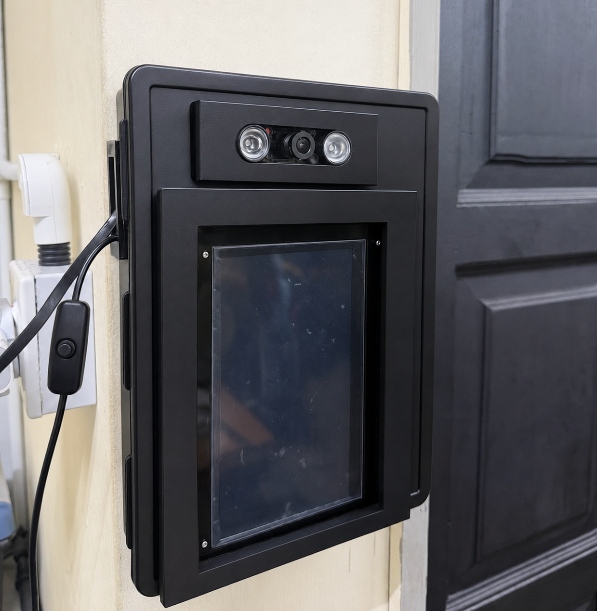

🎓 Automated Contactless Attendance System
UPM Faculty of Engineering | EEE4948 Integrated Design Project

📌 Introduction
This project develops an Automated Face Recognition Attendance System to improve the efficiency of classroom attendance recording. Traditional methods such as paper sign-in, card scanning, and fingerprint systems can be time-consuming, inaccurate, or vulnerable to proxy attendance. The proposed system uses a Raspberry Pi 5, camera input, MTCNN face detection, FaceNet recognition, and anti-spoofing detection to identify students and record attendance automatically in a contactless way.
⚙️ System Architecture & Workflow
Our system integrates a robust hardware-software ecosystem to ensure seamless, real-time tracking.
1. Enrollment Phase
The system captures 35 initial face samples per student. These are averaged into a single, highly accurate normative embedding and saved securely to the database.
2. Live Recognition Pipeline
- Detection & Alignment: Uses OpenCV and MTCNN to locate the largest face in the camera frame, then aligns it to a 160x160 crop.
- Liveness Validation: Passes the frame through an ONNX Anti-Spoofing Model (using threaded inference) to block photos or digital screens.
- Embedding & Matching: A FaceNet / InceptionResnetV1 model generates a 512-D face embedding. We use a Cosine Similarity Threshold of 0.82 to verify the student's identity against the database.
3. Backend & Cloud Integration
Once confirmed, attendance is categorized as Present or Late based on the timetable. Data is instantly logged to a local CSV and an SQLite database, then pushed through a FastAPI backend and Cloudflare Tunnel to our live Web Attendance Portal.
✨ Key Features
- ✅ Timetable Detection: Automatically classifies attendance status based on real-time scheduling.
- 🛡️ Bulletproof Security: Hardware-level frame skipping and liveness detection prevent spoofing attempts.
- 💻 Admin Dashboard: Comprehensive web portal for lecturers to view records and manage student registration.
👨💻 Meet the Team
- Developers: Chan Jian Xiang, Chan Kai Tong, Tan Kai Jian, and Wong Yong Zheng
- Lecturer: Prof. Ts. Dr. Wan Zuha Wan Hasan
- Supervisor: Prof. Madya Dr. Noor 'Ain Binti Kamsani